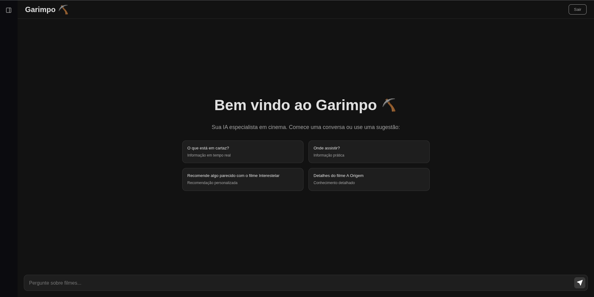

Garimpo — Assistente de cinema com IA
Aplicação full-stack que conversa com uma IA (GPT-4o) para recomendar filmes, explorar títulos e ver detalhes de produções. Respostas em tempo real com Server-Sent Events (SSE), integração com TMDB e LangChain.js no back-end.